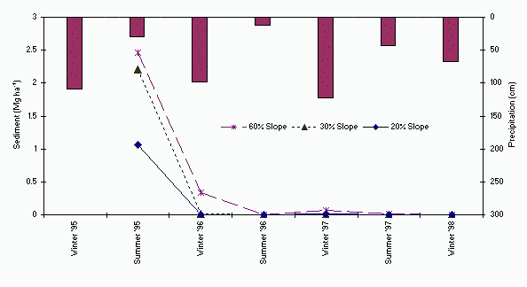
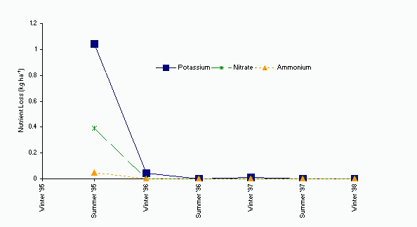
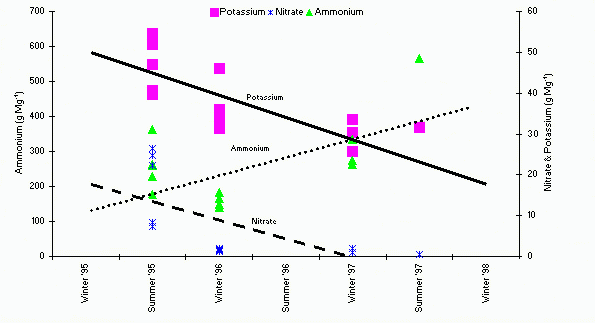

| USDA Forest Service | Rocky Mountain Research Station | Moscow FSL | Soil and Water Engineering |
|---|
Keywords: erosion measurement; silt fence; wildfire; nutrient loss
Recent fires have renewed interest in fire's effect on different components of the ecosystems, particularly erosion and soil productivity. Our objectives were to
The study site was within an unmanaged forest area in the Wallowa-Whitman National Forest, Eastern Oregon. The fire consumed all downed woody debris larger than 75 mm diameter and all standing trees were killed. In addition the entire forest floor (duff) was consumed, leaving mineral soil exposed to raindrop impact and overland flow.
Onsite erosion measurements were conducted for four years after the wildfire. Silt fences were used to collect eroded sediment on three slope classes (20, 30, and 60 percent), replicated twice, all within a high severity burn area. Mean first year erosion rates were 1.9 Mg ha-1, decreasing to 0.1 Mg ha-1 the second year, then to 0.03 Mg ha-1 the third. No erosion occurred the fourth year. In year one, the 60 percent slope sites produced twice as much sediment as did the 20 percent slope sites. Soil nutrient losses followed the same pattern as the sediment losses. High severity wildfires can produce accelerated erosion and nutrient loss for the first year before establishment of natural regeneration.
Fire is a natural and important part of the disturbance regime for forested terrestrial and aquatic systems especially in the western USA (Agee, 1993). However, much uncertainty exists in determining the quantitative assessment of fire effects. Fire and erosion are both natural processes that have been impacted by forest management activities such as fire suppression, logging, and road building during the last century. Management activities contribute to increased sediment supplies to streams and rivers. Additional sediment places streams and rivers at a higher risk for degradation. Sediment adversely affects spawning and rearing sites for anadromous and resident fish species, mobilizes in-stream sediment, and destroys aquatic habitat.
Surface erosion is the movement of individual soil particles by a force, either by uniform removal of material from the soil surface (sheet erosion) or by concentrated removal of material in the downslope direction (rill erosion) (Foster, 1982). Inherent erosion hazards are defined as the site properties that influence erosion. They include the ease with which the individual soil particles are detached (soil erodibility), slope gradient and length. Forces required to initiate and sustain the movement of soil particles can be from many sources, such as raindrop impact (Farmer and Van Haveren, 1971), overland flow (Meeuwig, 1971), gravity, wind, and animal activity. Protection is provided by all material on or above the soil surface, such as vegetation, surface litter, duff, and rocks that reduce the impact of the applied forces (Megahan, 1986; McNabb and Swanson, 1990).
Wildfires, which burn both small and large land areas, are often associated with lightning strikes from thunderstorms during the dry seasons and human-caused ignition (Agee, 1990). Fire severity is a qualitative term used to measure the effect of fire on ecosystem components (Walstad et al., 1990) and is often used to describe fire effects on soil (Simard, 1991). Ryan and Noste (1983) used ground char (burnt organic matter) classes to quantify fire severity. High severity burn areas experience higher rates of soil loss from erosion (McNabb and Swanson, 1990), increased peak flows of runoff, greater duff reduction, loss in soil nutrients (Harvey at al., 1989), and soil heating (Hungerford et al., 1991).
Potts et al. (1985) indicated that wildfires increased water yield and sedimentation. Post-burn sediment increases were severe only on sites with both steep slopes and large fires. They found maximum annual sediment production of 4.3 Mg ha-1, an increase of 284 percent over natural yields. These estimates were based on large-scale regional estimates on metamorphic parent material. Noble and Lundeen (1971) reported an average annual sediment production rate of 5.7 Mg ha-1 from a 365 ha burn on steep river breaklands in the South Fork of the Salmon River, Idaho. This was approximately seven times greater than sediment yields from similar, unburned lands in the vicinity. Radek (1996) observed erosion of 0.11 to 3.57 Mg ha-1 from several large wildfires, that covered areas ranging from 200 to 1770 ha in the northern Cascades mountains. Three years after this fire, large erosional events occurred from spring rainstorms, not from snowmelt. Most of the sediment produced did not leave the burned area. Sartz (1953) reported an average soil loss of 37 mm (>300 Mg ha-1) after a wildfire on a north-facing slope in the Oregon Cascades. Sheet erosion and raindrop splash accounted for the measured soil loss. Annual precipitation was 107 cm, with a maximum intensity of 90 mm hr-1. Vegetation covered the site within one year after the burn.
Objectives of this study were to determine hillslope erosion rates after a high severity wildfire, and short-term effects on nutrient loss and vegetation regrowth.
North aspects overstory species are grand fir (Abies grandis), Engelmann spruce (Picea engelmannii), and Douglas fir (Pseudotsuga menziesii). South aspects were characterized by ponderosa pine (Pinus ponderosa) and Douglas fir.
Lightning ignited a fast moving wildfire on August 29, 1994 which burned 9000 ha in 5 days. The fire consumed all fuels larger than 75 mm diameter and killed all standing trees. The entire forest floor (duff) was consumed leaving the soil covered with ash.
Six sites were selected for silt fence installation, two on each of three slope classes of 20, 30 and 60 percent. All sites were within high severity burn areas as defined by Ryan and Noste (1983). Criteria for site selection were size and uniformity of slope and sediment contributing areas. Study site characteristics are described in Table 1.
Silt fences were installed on the contour with a longitudinal downslope bow so sediment could not travel around the outer fence edges. Average silt fence length was 9 m. Silt fences were installed by initially digging a narrow, slightly curved ditch 25 cm deep in the soil. The bottom of the silt fence was folded into the bottom of the ditch and covered with soil and compacted to stabilize the silt fence bottom. Stakes (5 cm2 by 1.2 m) were inserted in sewn casings in the silt fence (2.5 m apart) and driven into the ground. Additional stakes were installed every 0.6 m to prevent any fabric stressing. The silt fence was tied to the stakes. The uphill side of the silt fence (about 0.5 m width) serves as the sediment deposition area which was smoothed and compacted.
Measurement of the deposited sediment was determined manually from the uphill side of each silt fence. Sediment was scraped from the compacted ground surface and weighed onsite with a portable scale. Subsamples (200 gm) were taken for moisture determination, nutrient analysis and particle size determination. Sediment was collected bi-annually and combined for annual totals.
Soil nutrients were determined on the fine fraction soil (< 2 mm) following air drying. Soil Potassium (K) was extracted with a solution of 0.75N NaOAc and analyzed by atomic absorption (Helmke and Sparks, 1996). Nitrate (NO3) and available ammonium (NH4) was extracted with a solution of 2N KCl and analyzed by colorimetry (Mulvaney, 1996). Vegetation coverage was estimated ocularly in 19 m2 areas at each site during the first and second growing seasons.
Table 1. Site characteristics for the Twin Lakes study area.
Slope Contributing Area Silt Fence Length Particle Size Distribution In Situ Soil (0-1 cm) Eroded Sediment1 Sand Silt Clay Sand Silt Clay (%) (m2) (m) (%) (%) (%) (%) (%) (%) 20 632 8.4 61.6 28.8 9.6 69.3 26.8 3.9 20 383 6.3 61.6 28.8 9.6 14.3 77.1 8.6 30 152 9.7 59.8 37.0 3.1 m m m 30 297 8.6 59.8 37.0 3.1 m m m 60 636 8.7 90.7 8.3 1.0 44.9 48.1 6.9 60 234 7.2 90.7 8.3 1.0 48.1 48.2 3.8 1 m indicates a missing value.
Mean annual erosion rates were highest the first year with 2.5 Mg ha-1 sediment collected from the 60 percent slopes, 2.2 Mg ha-1 sediment collected from the 30 percent slope, and 1.1 Mg ha-1 sediment collected from the 20 percent slope (Figure 1). Year one values were significantly higher (a=0.05) than the subsequent years' erosion rates. Erosion rates dropped seven fold on the 60 percent slopes, and dropped two orders of magnitude on the 30 percent slopes and 20 percent slopes during the second year. By the fourth year no erosion occurred from any of the plots. One of the 30 percent slope sites had the highest erosion rate measured during the first year (4.4 Mg ha-1). Whereas, the other 30 percent slope site did not produce any erosion; this was due to soil coverage by moss and lichens shortly after the fire. This site was adjacent to a natural spring which may have caused higher soil moisture contents during the fire; thus it did not burn as severely and the moss and lichens were easily reestablished.

Figure 1. Mean erosion rates and precipitation during the four years after the wildfire.
Erosion rate reduction was due to recovery of natural vegetation. First year growing season shrubs (3 percent), forbs (7 percent) and grasses (18 percent) accounted for 28 percent of the total ground cover. After the second growing season, shrubs (36 percent), forbs (22 percent) and grasses (24 percent) accounted for 82 percent of the total ground cover. Previous work by Robichaud (1996) indicate an erosion reduction by increasing ground cover after prescribed fire.
Particle size distribution analysis showed eroded sediment was more fine than the in situ soil, especially from the steepest slope sites (Table 1). This was probably due to loss of organic matter that binds particles during the fire. Also, the breakdown of aggregates during the fire and during sediment transport resulted in finer soil particles.
Eroded sediment nutrient analysis indicate the largest flush of K, NO3 and NH4 loss correlated well (correlation coefficient = 0.61 for K, 0.73 for NO3, and 0.47 for NH4; n=36) with the sediment losses. Mean nutrient losses were the highest in year one (1 kg ha-1 K, 0.4 kg ha-1 NO3 and 0.05 kg ha-1 NH4) and negligible by year three (Figure 2). Soil K concentrations in the sediment decreased from 455 to 61 g Mg-1 from the first to the third year and NO3 concentration decreased from 129 to 2 g Mg-1 (Figure 3). This decrease was due to the ease in which they were leached from the soil and or lost by percolation since they are negatively charged. Ammonium concentrations increased from 22 to 48 g Mg-1, probably due to decomposition of the new vegetation or condensation within the soil profile.

Figure 2. Mean nutrient losses in the sediment for all sites combined.

Figure 3. Nutrient concentration in the eroded sediment. Trend lines are shown for each nutrient.
Some deep rills were observed in and near the study site indicating that the eroded sediment was not only from sheet erosion but also included concentrated flow (rill) erosion. If the soil loss was hypothetically spread over the site with no rill erosion, the depth of topsoil loss would be 6 mm on the steep slopes and 1.5 to 2 mm on the low slopes. Thus depth of soil loss from erosion after the fire is unlikely to be detrimental to the long-term soil productivity. But, since there was not uniform sheet erosion over the entire area, site/soil productivity probably may have been impacted in isolated concentrated flow paths only. Site/soil productivity may have been reduced during the fire (Harvey et al., 1989) but not due to erosion.
Erosion rates were highest first year post-fire. Most erosion occurred during spring runoff. By the second year, erosion rates were one to two orders of magnitude less due to vegetative regrowth. Nutrient losses followed the same pattern as the sediment losses with most losses occurring in year one. Volatile nutrient loss due to the fire are more likely to reduce the productivity (Harvey et al., 1989) than losses due to erosion (DeBano et al., 1998).
These erosion rates and nutrient loss estimates indicate unmanaged forest fire effects occur primarily the first year. Periodic wildfires and accelerated erosional and hydrological responses are part of natural ecosystem processes.
The authors would like to acknowledge the assistance of William Stack, former Hydrologist, and Michelle Chapin, former Soil Scientist, Wallowa-Whitman National Forest, Enterprise, Oregon who assisted in field data collection.
Agee, J. K. 1990. The Historical Role of Fire in Pacific Northwest Forests. In: Walstad, J. D.; Radosevich, S. R.; Sandberg, D. V., eds. Natural and prescribed fire in Pacific Northwest forests. Corvallis, OR: Oregon State University Press. Chapter 3.
Agee, J. K. 1993. Fire Ecology of Pacific Northwest Forests. Washington, D. C.: Island Press. 493 p.
DeBano, L. F.; Neary, D. G.; Ffolliott, P. F. Fire's Effect on Ecosystems. New York: John Wiley and Sons. 333 p.
Farmer, E. E.; Van Haveren, B. P. 1971. Soil Erosion by Overland Flow and Raindrop Splash on Three Mountain Soils. Gen. Tech. Rpt. INT-100. Odgen, UT: U.S. Dept. of Agriculture, Forest Service, Intermountain Research Station. 14 p.
Foster, G. R. 1982. Modeling the Erosion Process. In: Haan, C. T.; Johnson, H. P.; Brakensiek, D. L., eds. Hydrologic modeling of small watersheds. St. Joseph, MI: American Society of Agricultural Engineers. Chapter 8.
Harvey, A. E.; Jurgensen, M. F.; Graham, R. T. 1989. Fire--Soil Interactions Governing Site Productivity in the Northern Rocky Mountains. In: Baumgartner, D. W. Prescribed Fire in the Intermountain Region. Pullman, WA: Washington State Univ. 9-19.
Helmke, P. A.; Sparks, D. L. 1996. Lithium, Sodium, Potassium, Rubidium, and Cesium. In: Sparks, D. L., ed. Method of Soil Analysis. Madison, WI: Soil Sci. Soc. Amer. Chapter 19.
Hungerford, R.D.; Harrington, M.G.; Frandsen, W.H.; Ryan, K.C.; Niehoff, G.J. 1991. Influence of Fire on Factors That Affect Site Productivity. In: Neuenschwander, L. F. and Harvey, A.E. comps. Management and Productivity of Western-Montane Forest Soils. Gen. Tech. Rpt. INT-280. Ogden, UT: U.S. Dept. of Agriculture, Forest Service, Intermountain Research Station: 32-50.
McNabb, D. H.; Swanson, F. J. 1990. Effects of Fire on Soil Erosion. In: Walstad, J. D.; Radosevich, S. R.; Sandberg, D. V., eds. Natural and Prescribed Fire in Pacific Northwest Forests. Corvallis, OR: Oregon State University Press. Chapter 14.
Meeuwig, R. O. 1971. Soil Stability on High-Elevation Rangeland in the Intermountain Area. Res. Paper INT-94. Ogden, UT: U.S. Dept. of Agriculture, Forest Service, Intermountain Research Station. 10 p.
Megahan, W. F. 1986. Recent Studies on Erosion and Its Control on Forest Lands in the United States. In: Richard, F., ed. Range Basin Sediment Delivery: Proceedings; 1986 August; Albuquerque, NM. IAHS Pub. 159, Wallingford, Oxon, United Kingdom: 178-189.
Mulvaney, R. L. 1996. Nitrogen. In: Sparks, D. L., ed. Method of Soil Analysis. Madison, WI: Soil Sci. Soc. Amer. Chapter 38.
Noble, E. L.; Lundeen, L. 1971. Analysis of Rehabilitation Treatment Alternatives for Sediment Control. In: Symposium on Forest Land Uses and Stream Environment. Oregon State University, Corvallis, OR: 86-96.
Potts, D. F.; Peterson, D. L.; Zuuring, H. R. 1985. Watershed Modeling for Fire Management in the Northern Rocky Mountains. PSW-177. Berkeley, CA : U.S. Dept. of Agriculture, Forest Service, Pacific Southwest Station. 11 p.
Radek, K. J. 1996. Soil Erosion Following Wildfires on the Okanogan National Forest-Initial Monitoring Results. In: International Erosion Control Association Symposium; 1996 February; Seattle, WA. 7 p.
Robichaud, P. R. 1996. Spatially-Varied Erosion Potential from Harvested Hillslopes After Prescribed Fire in the Interior Northwest. Ph. D. diss. Univ. Of Idaho, Moscow.
Ryan, K. C.; Noste, N. V. 1983. Evaluating Prescribe Fires. In: Lotan, J. E.; Kilgore, B. M.; Fischer, W. C.; Mutch, R. W., technical coordinators. In: Symposium and Workshop of Wilderness Fire. Gen. Tech. Rep. INT-182. Ogden, UT: U.S. Dept. of Agriculture, Forest Service, Intermountain Research Station: 230-238.
Sartz, R. S. 1953. Soil Erosion on a Fire-Denuded Forest Area in the Douglas-Fir Region. Journal of Soil and Water Conservation. N/A: 279-281.
Simard, A. J. 1991. Fire Severity, Changing Scales, and How Things Hang Together. International Journal of Wildland Fire. 1(1): 23-34.
Walstad, J. D.; Radosevich, S. R.; Sandberg, D. V. 1990. Glossary. In: Walstad, J. D.; Radosevich, S. R.; Sandberg, D. V., eds. Natural and Prescribed Fire in Pacific Northwest Forests. Corvallis, OR: Oregon State University Press. Appendix 3.
|
1 Peter R. Robichaud, Research Engineer USDA-Forest Service Rocky Mountain Research Station 1221 S. Main St. Moscow, ID 83843 Phone: 208/883-2349 FAX: 208/883-2318 Email: probichaud@fs.fed.us |
2 Robert E. Brown, Hydrologist USDA-Forest Service Rocky Mountain Research Station 1221 S. Main St. Moscow, ID 83843 Phone: 208/882-3557 FAX: 208/883-2318 Email: bbrown02@fs.fed.us |
Bozeman, Montana
June 30--July 2, 1999
Edited By
Darren S Olsen
and
John P. Potyondy
American Water Resources Association
950 Herndon Parkway, Suite 300
Herndon, VA 20170-5531
www.awra.org
|
USDA Forest Service Rocky Mountain Research Station Moscow Forestry Sciences Laboratory 1221 South Main Street, Moscow, ID 83843 https://forest.moscowfsl.wsu.edu/ |